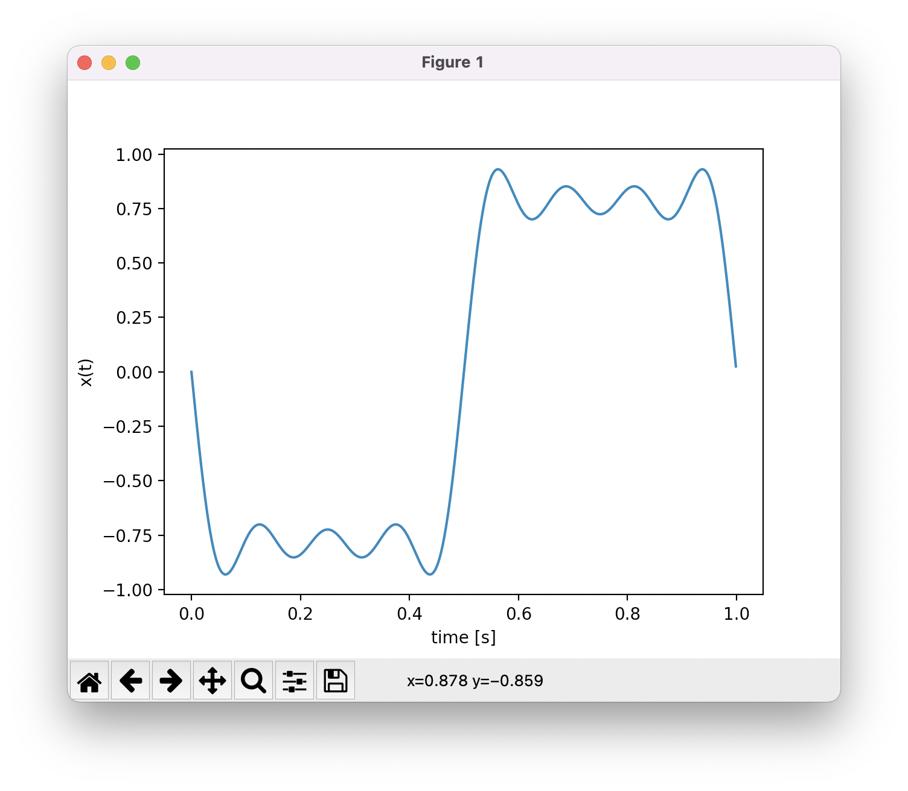

Fourier Series Synthesizer¶
The goal of this project is to create a Fourier series synthesizer with a user interface.
Mathematical Model¶
The amplitude-phase form decomposition is given by
where
\(f_0\) is the fundamental frequency,
\(a_l\) and \(\phi_l\) are the Fourier coefficient.
First Part¶
The objective of the first part is to draw the waveform \(x(t)\) with \(t=n/F_s\) where \(F_s\) is the sampling frequency.
Instructions¶
Using Numpy, create a time vector ranging from \(t=0\) s to \(t=1\) s.
Using Numpy, compute the vector \(x(t)\).
Using Matplotlib, draw the waveform \(x(t)\)
Example¶
Parameters :
Fs = 1000
f0 = 1
a = np.array([0, 1, 0, 1/3, 0, 1/5, 0, 1/7, 0])
phi = (np.pi/2)*np.ones(8)
Result :
{kind=link}
Second Part¶
The objective of the second part is to create a user interface using tkinter for specifying the values of \(a_l\) and \(phi_l\) .
Instructions¶
Using Tkinter (see tutorials section) with two frames, create the following interface with user entries for specifying the values of \(a_l\)
{kind=link}
Using Tkinter and the first part of your project, makes the connection between the User Interface (UI) and the numpy/matplotlib code using the default Parameters
Fs = 1000
f0 = 1
phi = (np.pi/2)*np.ones(8)
{kind=link}